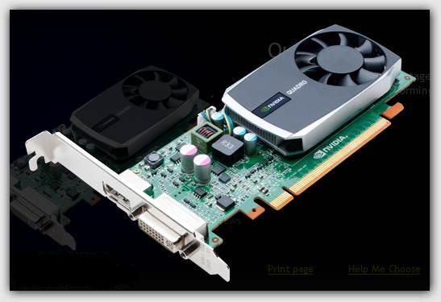

Placa Vishion
Placa Vishion
|
La mejor tarjeta de video para un diseñador gráfico
Nunca te has preguntado, porqué al comprar una tarjeta de video nueva, sea de gama media o alta por mucho que cueste, termina por ser un desastre al manejar polígonos o grandes canvas de programas como 3DS MAX, Photoshop CS5 o Maya, además de que una tarjeta de video desde la gama media Geforce 240 a la poderosa GTX 480 o sus equivalentes en AMD, consumen ingentes cantidades de electricidad sin que se refleje costo/beneficio. Si eres uno de esos perdidos  de las nomenclaturas y quiere una PC realmente profesional para tu actividad como modelado 3D, CAD, 2D, Edición de video lineal, no lineal, etcétera, esto puede orientarte de forma básica. Introducción: Las tarjetas, no importando su origen, tiene dos posibles usos; uno para aplicaciones multimedia-videojuegos y otro para software profesional. A continuación veremos las diferencias entre estos dos tipos de tarjetas. Tarjetas estándar para videojuegos, multimedia y HTPC Una tarjeta de video estándar es una tarjeta orientada para tareas multimedia de usuarios que quieren entretenimiento y una capacidad moderada de edición profesional. En Nvidia las conocemos por las definiciones Gforce GT, Gforce GS (gama baja), Gforce GTX, Gforce GTS, Gforce FX (series abandonadas). En ATI ahora AMD, las conocemos por Radeon y Radeon HD. Están optimizadas para videojuegos y video de alta definición, su principal función es acelerar gráficos 3D, vértices y polígonos en números brutos, por lo que no tienen la precisión en las unidades de espacio, ni en las texturas y las dinámicas de objetos a nivel científico o matemático. Por tanto se requiere de otro tipo de tarjetas de videos que no estén enfocadas en acelerar, sino en manejar de forma precisa complejos modelos de datos 3D, 2D e incluso datos para actividades financieras y científicas. Principales características: *Están diseñadas para acelerar gráficos 3D de videojuegos, contenido multimedia y películas en alta resolución. *Sacrifican la precisión y la calidad de la imagen por altos niveles de cuadros por segundo (fps) Para altas velocidades tiene que gastar mucha electricidad y generan mucho calor. *Son para computadoras usadas para el ocio. FuentePlacas de Video - Nvidia Geforce Serie 9 El gran dilema de los que poseemos una computadora para utilizarla especificamente para videojuegos, es tener que actualizar año tras año la placa de video o tarjeta de video como se la llama en España. Siempre se van actualizando la calidad grafica de los videojuegos y nuestras Pc no soportan poder correr el juego con la maxima fluidez ya que si no es por la actualizacion del directx de 9 a 10, es por otros requisitos que los juegos van pidiendo a medida que van saliendo al mercado. Con lo cual nunca es lo mejor tener la ultima placa de video, ni tampoco es lo mejor tener la mas economica si vamos a utilizar nuestra computadora para gran parte correr todos los juegos actuales.  Por eso Nvidia una marca que para mi es lider en lo que respecta a graficos saco la serie 9 de sus placas Geforce. Las GPU NVIDIA® GeForce® Serie 9 convierten el PC en un potente sistema de entretenimiento interactivo con funciones pensadas para mejorar cada aspecto de la visualización de imágenes en el ordenador. Desde la ejecución de los juegos más sofisticados del mercado hasta la edición y visualización de vídeos en HD, el manejo de fotos o la búsqueda de direcciones en mapas 3D, estas GPU son esenciales para disfrutar de una experiencia visual única en el PC.  Caracteristicas *Resoluciones de hasta 2560 X 1600 proporcionan juego HD extremo. *La tecnología PureVideo® HD ofrece máxima calidad en la reproducción de vídeos HD DVD o Blu-ray. *La tecnología HybridPower™* proporciona un rendimiento gráfico excepcional y ahorro de energía para adaptarse a las necesidades de cada día. *La tecnología SLI® y la compatibilidad con PCIe 2.0 garantizan una extraordinaria capacidad de expansión y transferencias de datos ultrarrápidas. *La combinación perfecta de precio y rendimiento para recibir más a cambio de tu dinero. *Disponible sólo en determinados modelos de la serie 9. Fuente
|